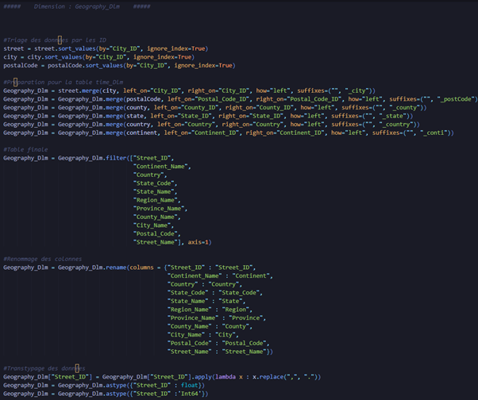
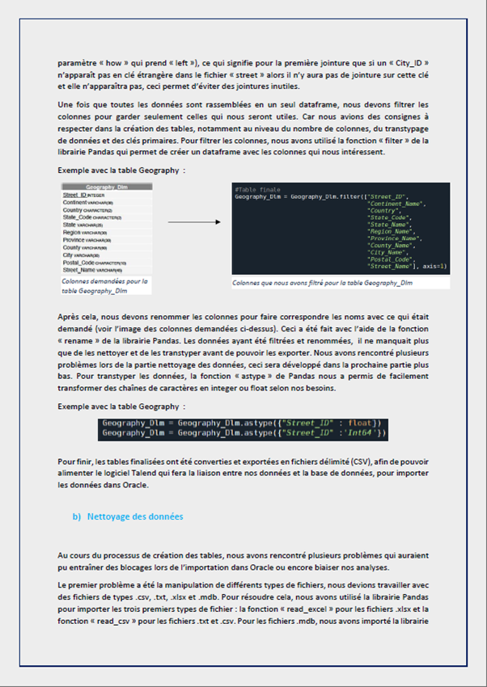
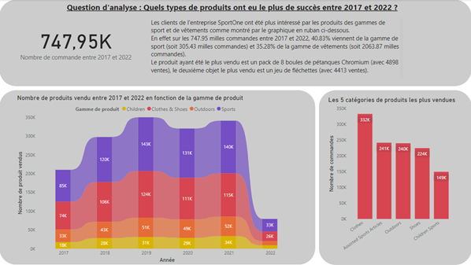

Intégration des données dans un Datawarehouse
L’objectif de ce projet était de construire une base de données suivant un schéma en étoile pour une entreprise fictive de sport. À partir de plusieurs fichiers, nous devions trier, nettoyer, et alimenter automatiquement les différentes tables de la base de données.
La première étape fut l’import et le nettoyage des données, les données de l’entreprises étaient réparties dans plusieurs fichiers de différents formats : .csv, .mdb, .xls et .txt. Cette partie s’est faite en Python. Une fois importées, nous avons classé les données selon leur table respective en faisant une jointure sur leurs clés, les fichiers présentaient des problèmes de doublons ce qui provoquait des erreurs dans la jointure, il a alors fallu supprimer ces doublons afin de résoudre le problème. Les tables ont été par la suite filtrées pour ne conserver que les données qui nous intéressaient, nous les avons ensuite nettoyées en changeant des formats de dates, de données et certains séparateurs qui n’étaient pas valide (exemple : des dates au format DD//MM/YYYY au lieu de DD/MM/YYYY).
Une fois le nettoyage effectué, il fallait alors créer une connexion avec la base de données, gérée avec Oracle, un logiciel de gestion de base de données. Une librairie Python permettait de faire cela, en créant si besoin les tables qui n’existaient pas déjà dans la base de données.
La dernière étape a été d’envoyer les données vers Oracle, ce qui a été fait avec Talend, qui permet de transmettre des données vers une autre source de données et permet donc d’automatiser l’import des fichiers vers Oracle. Une documentation de toute ces étapes ont été produite afin de faire une synthèse du projet.
En important les données depuis Oracle, un Dashboard permettant la visualisation des données de l’entreprise de sport a été réalisé avec PowerBI. Ce tableau de bord suit les performances de l’entreprise sous plusieurs dimensions : géographique, temporelle, production, effectifs et clients.
Compétences acquises :
- Utilisation d’un ETL (Talend)
- Utilisation d’un logiciel de gestion de base de données (Oracle)
- Réalisation d’un script permettant d’automatiser la chaîne de traitement d’une information, de sa récupération jusqu’à son enregistrement dans une base de données
- Approfondissement de mes connaissances en Python (nettoyage et export des données)
- Gestion de données venant de multiples sources (CSV, MDB, TXT, XLS)
- Création d’une base de données respectant des contraintes du commanditaire et suivant un schéma précis
- Production d’une documentation faisant synthèse du travail réalisé
- Création d’un tableau de bord sous PowerBI, alimenté depuis une base de données
Illustrations

Schéma de la base de données

Extrait du script, préparant une table de la base de données concernant la dimension géographique de l'entreprise

Extrait du rapport

Extrait du Dashboard